Geometry Nodes#
Important
For geometry nodes, the full API documentation reference pynodes.geosocks.
This gallery contains a collection of best practice code snippets together with their corresponding video/image output, illustrating different functionalities all across the library. These are all under the MIT license, so feel free to copy & paste them to your projects. Enjoy this taste of Pynodes!
Tip
Start coding with this line:
from pynodes import *
Atom Links#
sweep_mesh_edges
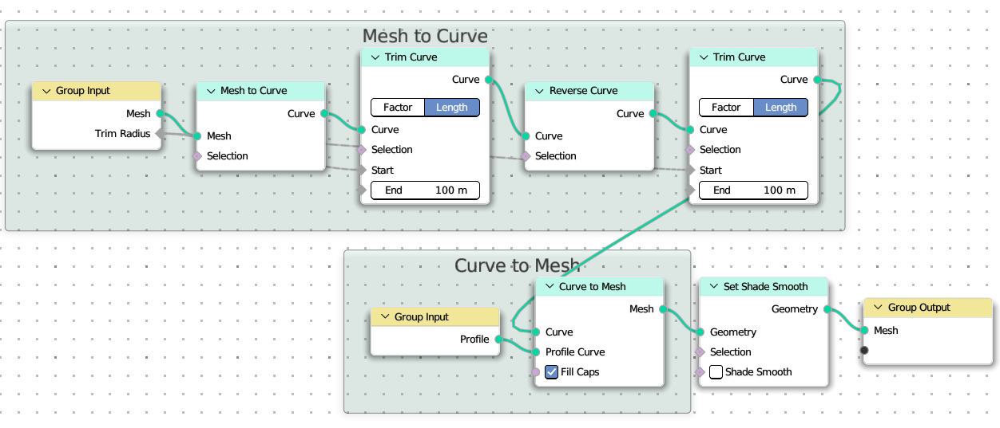{kind=link}
@tree
def sweep_mesh_edges(mesh: Mesh, profile: Curve, trim_radius: Float):
with frame("Mesh to Curve"):
curve = mesh.to_curve().trim_length(trim_radius, 100).reverse().trim_length(trim_radius, 100)
with frame("Curve to Mesh"):
mesh = curve.to_mesh(profile, True)
return mesh.set_shade_smooth(False)
link_mesh_atoms
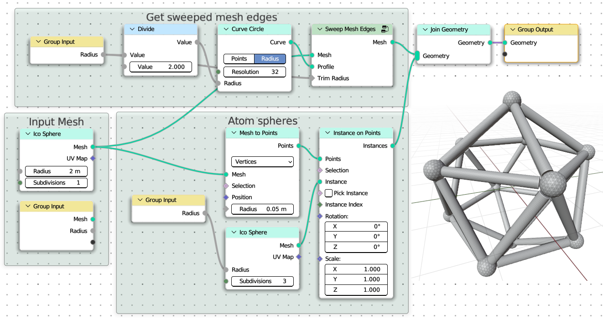{kind=link}
@tree # default, min, max
def link_mesh_atoms(mesh: Mesh, radius: Float = (0.2, 0, 1.2)):
with frame("Input Mesh"):
# comment this line to get the mesh from Group Input
mesh = MeshIcoSphere(2).mesh
with frame("Get sweeped mesh edges"):
# call the function defined above
edges = sweep_mesh_edges(mesh, CurveCircle(radius / 2), radius)
with frame("Atom spheres"):
spheres = MeshIcoSphere(radius, subdivisions=3).mesh.on_points(mesh.to_points())
return edges + spheres
Clone to Mesh Faces#
clone_cones_to_mesh_faces
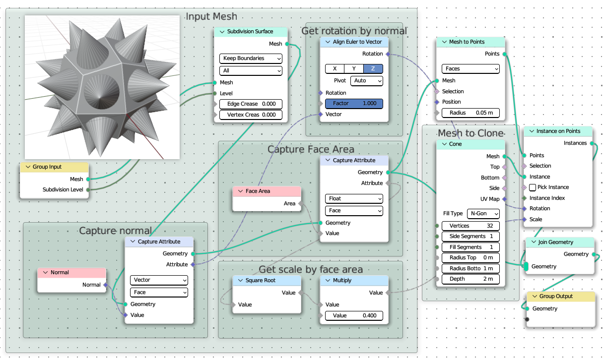{kind=link}
@tree
def clone_cones_to_mesh_faces(mesh: Mesh, subdivision_level: Integer = (1, 0, 4)):
with frame("Input Mesh"):
# For this example, the input mesh is a blender cube object
mesh = mesh.subdivision_surface(level=subdivision_level)
with frame("Capture normal"):
norm = mesh.capture_vector_on_faces(mesh.normal)
with frame("Get rotation by normal"):
rotation = norm.align_euler_to_vector(axis="Z")
with frame("Capture Face Area"):
face_area = mesh.capture_float_on_faces(mesh.face_area)
with frame("Get scale by face area"):
scale = Float.sqrt(face_area) * 0.4
with frame("Mesh to Clone"):
cone = MeshCone().mesh
cones = cone.on_points(mesh.to_points("FACES"), rotation=rotation, scale=scale)
return mesh + cones
Mesh Surface to Maze#
mesh_to_maze
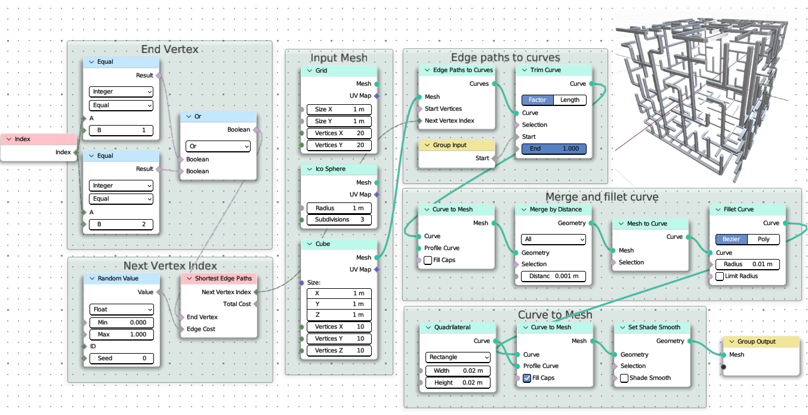{kind=link}
@tree
def mesh_to_maze(mesh: Mesh, start: Float = (0, 0, 1)):
with frame("Input Mesh"):
# Choose one of the following meshes to test effects
mesh = MeshGrid(1, 1, 20, 20).mesh
mesh = MeshIcoSphere(subdivisions=3).mesh
mesh = MeshCube(1, 10, 10, 10).mesh
index = mesh.index
with frame("End Vertex"):
end_vertex = (index == 1) | (index == 2) # Boolean Math Or
with frame("Next Vertex Index"):
next_vertex_index = mesh.shortest_edge_paths(end_vertex, RandomFloat()).next_vertex_index
with frame("Edge paths to curves"):
curve = mesh.edge_paths_to_curves(next_vertex_index=next_vertex_index).trim_factor(start)
with frame("Merge and fillet curve"):
curve = curve.to_mesh().merge_by_distance().to_curve().fillet_bezier(0.01)
with frame("Curve to Mesh"):
mesh = curve.to_mesh(Rectangle(0.02, 0.02), True).set_shade_smooth(shade_smooth=False)
return mesh
Flying Dust#
Dust
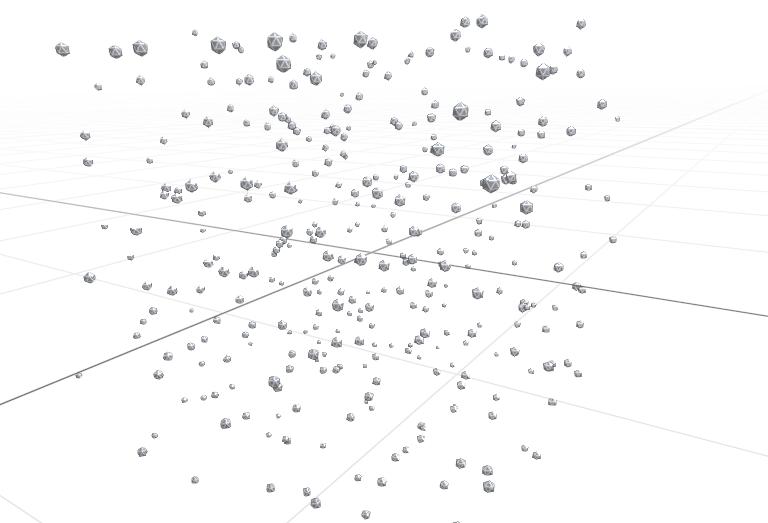 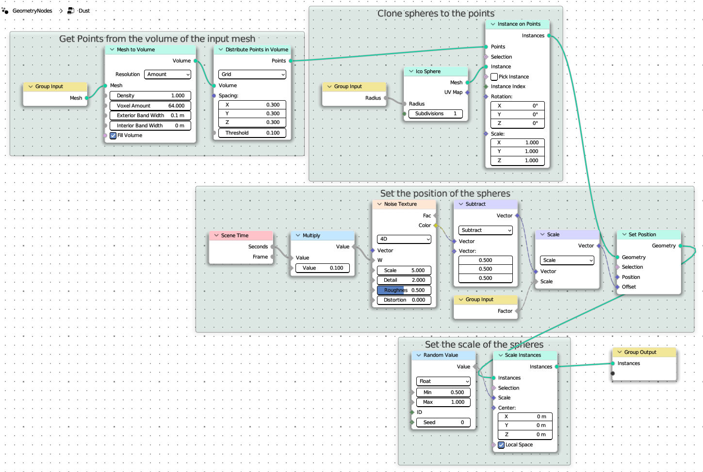{kind=link}
{kind=link}
@tree
def dust(mesh: Mesh, factor: Float = 1, radius: Float = 0.03):
with frame("Get Points from the volume of the input mesh"):
volume = mesh.to_volume()
points = volume.distribute_points_grid()
with frame("Clone spheres to the points"):
spheres = MeshIcoSphere(radius).mesh.Instances.on_points(points)
with frame("Set the position of the spheres"):
w = SceneTime().seconds * 0.1 # Animating by scene time
spheres.set_position(offset=(NoiseTexture("4D", w=w).color - 0.5) * factor)
with frame("Set the scale of the spheres"):
spheres = spheres.scale_instances(RandomFloat(min=0.5, max=1))
return spheres
Sierpinski Triangle 3D#
Sierpinski Triangle
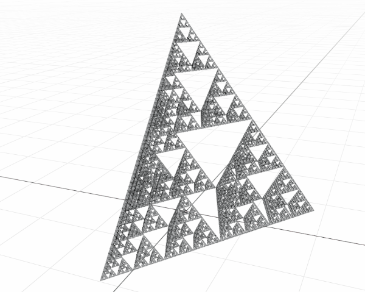 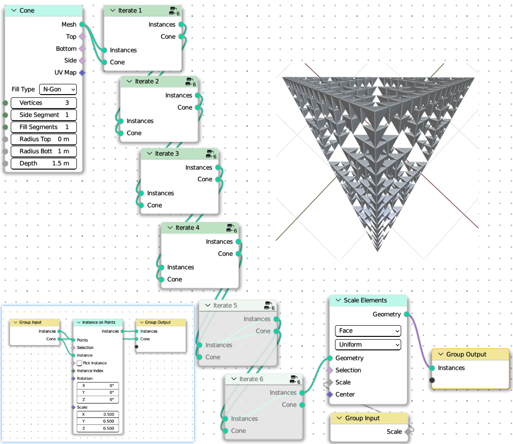{kind=link}
{kind=link}
@tree
def iterate_sierpinski(instances: Instances, cone: Mesh):
"""Iterate Sierp."""
instances = cone.Instances.on_points(instances, scale=0.5)
return instances, cone
@tree
def sierpinski_fractal(scale: Float = (2, 0.1, 10)):
cone = MeshCone(vertices=3, depth=1.5).mesh
instances, cone = iterate_sierpinski(cone, cone)
instances.node.label = f"Iterate 1"
for i in range(5):
instances, cone = iterate_sierpinski(instances, cone)
instances.node.label = f"Iterate {i+2}"
return instances.scale_elements(scale=scale)
Menger Sponge#
Menger Sponge
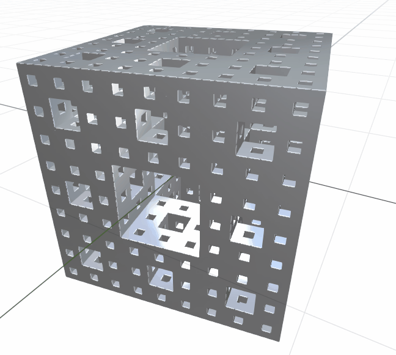 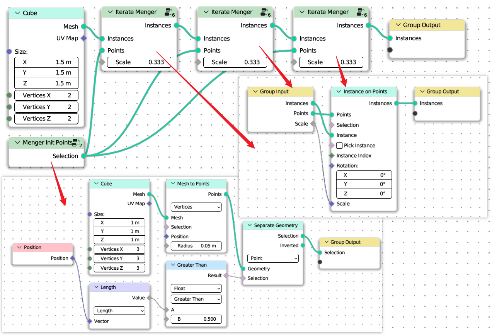{kind=link}
{kind=link}
@tree
def iterate_menger(instances: Instances, points: Points, scale: Float = (1 / 3, 0, 1 / 3)):
return instances.on_points(points, scale=scale)
@tree
def menger_init_points():
points = MeshCube(1, 3, 3, 3).mesh.to_points()
return points[points.position.length > 0.5].select()
@tree
def menger_sponge():
cube = MeshCube(1.5).mesh
points = menger_init_points()
instances = iterate_menger(cube, points)
for i in range(2):
instances = iterate_menger(points=points, instances=instances)
return instances
Pythagoras Tree#
pythagoras_tree
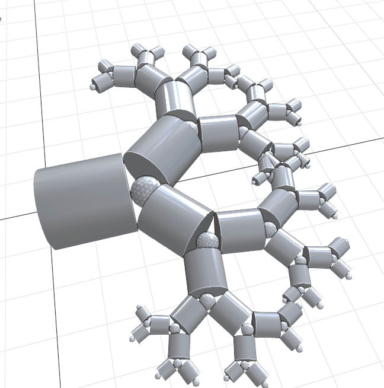 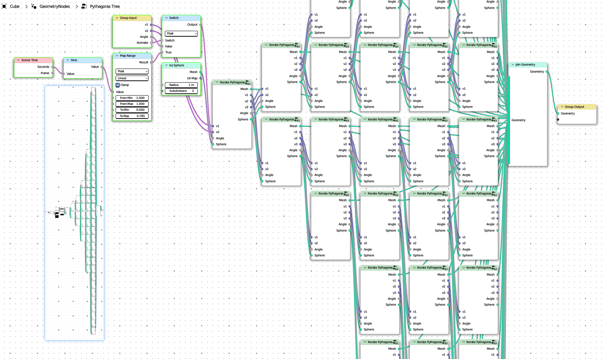 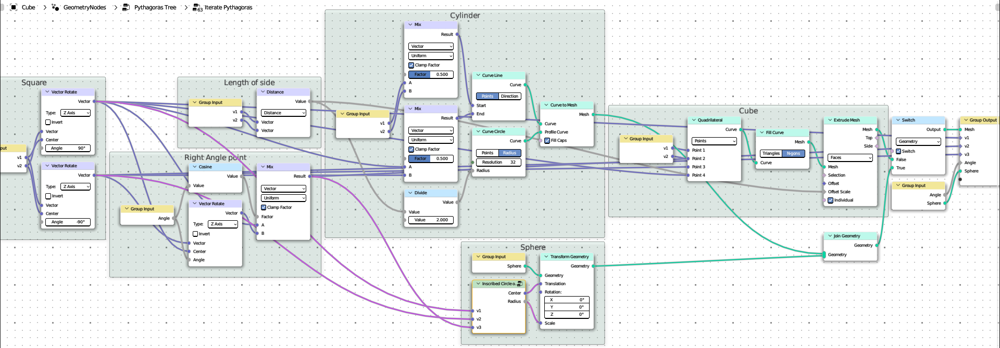 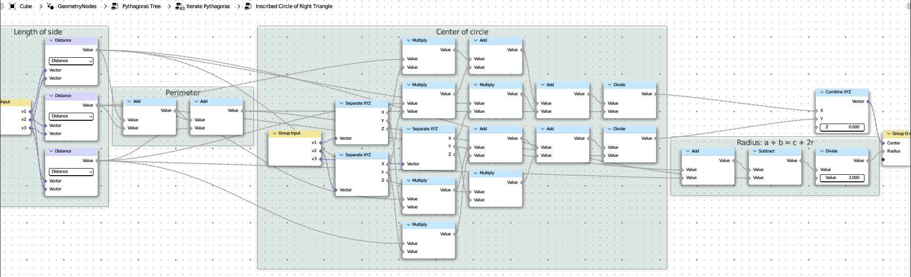{kind=link}
{kind=link}
{kind=link}
{kind=link}
from pynodes import *
from pynodes.math import *
# Calculate the center and radius of the tangent circle of a right triangle. v3 is the right Angle point
@tree
def inscribed_circle(v1: Vector, v2: Vector, v3: Vector):
"""Inscribed Circle of Right Triangle"""
with frame("Length of side"):
c = v1.distance(v2)
a = v2.distance(v3)
b = v3.distance(v1)
with frame("Perimeter"):
l = c + a + b
with frame("Radius: a + b = c + 2r"):
r = (a + b - c) / 2
with frame("Center of circle"):
x = (a * v1.x + b * v2.x + c * v3.x) / l
y = (a * v1.y + b * v2.y + c * v3.y) / l
return CombineXYZ(x, y)("Center"), r("Radius") # Rename the ouput socket
# return CombineXYZ(x, y), r # this is also OK
@tree
def iterate_pythagoras(v1: Vector, v2: Vector, angle: Float = (pi / 6, 0, pi / 2), sphere: Mesh = None):
with frame("Length of side"):
length = v1.distance(v2)
with frame("Square"):
v3 = v2.rotate("Z_AXIS", center=v1, angle=pi / 2)
v4 = v1.rotate("Z_AXIS", center=v2, angle=-pi / 2)
with frame("Right Angle point"):
v5 = v4.rotate("Z_AXIS", center=v3, angle=angle)
v5 = v3.mix(v5, cos(angle))
with frame("Cube"):
rect = Quadrangle(v1, v2, v4, v3)
cube = rect.filled_ngons.extrude(length).mesh
with frame("Cylinder"):
line = v1.mix(v2).line_to(v3.mix(v4))
cylinder = line.to_mesh(CurveCircle(length / 2), True)
with frame("Sphere"):
center, radius = inscribed_circle(v3, v4, v5)
# sphere = MeshIcoSphere(radius, 1).mesh.transform(center)
sphere_transformed = sphere.Mesh.transform(center, scale=radius)
mesh = cube.switch(True, cylinder.join(sphere_transformed))
return mesh("Mesh"), v3('v1'), v5('v2'), v4('v3'), angle("Angle"), sphere
def iterate_n(v1, v2, angle, sphere, curves: list, n=3):
if n == 0:
return
mesh, v1, v2, v3, angle, sphere = iterate_pythagoras(v1, v2, angle, sphere)
curves.append(mesh)
iterate_n(v1, v2, angle, sphere, curves, n - 1)
iterate_n(v2, v3, angle, sphere, curves, n - 1)
@tree
def pythagoras_tree(
v1: Vector = (-1, 0, 0),
v2: Vector = (1, 0, 0),
angle: Float = (pi / 6, 0, pi / 2),
animate: Boolean = True,
):
curves = []
sphere = MeshIcoSphere(subdivisions=3).mesh
iterate_n(v1, v2, angle.switch(animate, sin(SceneTime().seconds).map_range(-1, 1, 0, pi / 4)), sphere, curves, 6)
return join(*curves)